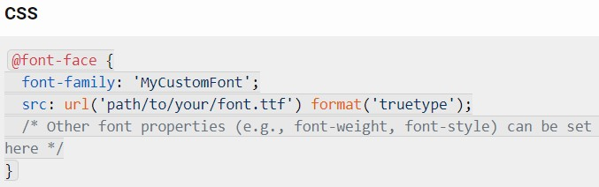
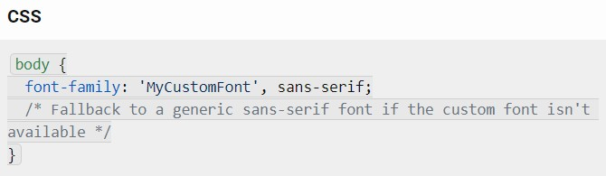

How a specific font can be delivered to a client (browser) making a request to your server ?
When a client’s browser requests content from your server, you can ensure that a specific font is delivered by using the CSS @font-face rule. Let me break it down for you:
Font Licensing
- First, ensure you have the appropriate license to distribute the font. If you do, you’re good to proceed.
Font Files:
- Collect the font files you want to use (e.g., TrueType Font files with the .ttf extension).
- Place these font files on your server.
CSS @font-face Rule:
- In your CSS stylesheet, define the @font-face rule.
- Specify the font family name, the URL to the font file, and other relevant properties.
- Here’s an example:

Apply the Font:
- Now you can use your custom font in your stylesheets by referring to its font family name:

Cross-Browser Support:
- Most modern browsers support @font-face, but it’s essential to test across different browsers.
- Can also use webfont services (like Google Fonts) that deliver fonts via simple CSS